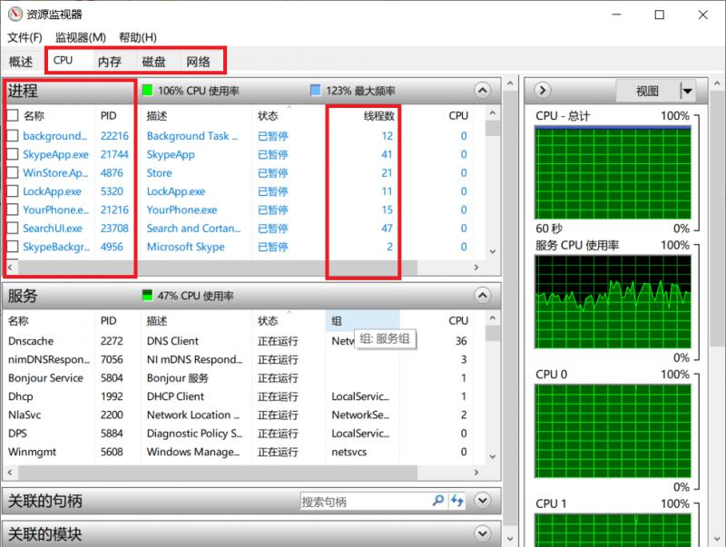
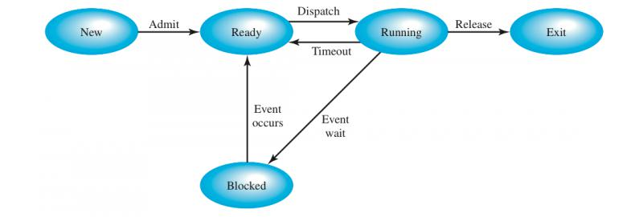
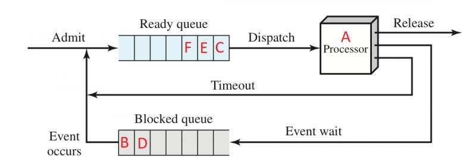
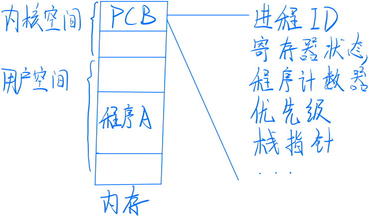

这是操作系统系列第 2 篇。
如果你想知道操作系统每天都在做些什么，那就打开你的资源监视器：

资源监视器截图，Windows 10
单独通过这一张图，我们就能够总结出操作系统的几个重要功能：
为什么我要从进程开始讲起呢？
原因很简单，我们每天使用计算机，包括手机和电脑，本质上是使用运行在其操作系统上的应用程序。对于我们来讲，操作系统最为直观的功能就是进程管理，所以，让我们从进程管理入手，由表及里，一步步深挖操作系统的本质。
我在第一篇文章里简单提到了进程这一概念，这里再详细讲一下，加深理解。
操作系统的设计从根本上来说是为了迎合用户需求，对个人用户来说，需求就是在一台计算机上运行多个应用程序，以满足生活和工作的需要。但应用程序这么多，不可能让每一个程序占用一个 CPU 核心啊，因为 CPU 核心是有限的，人的需求是无限的。
所以操作系统就需要将无限（夸张一下）的应用程序，分配到有限的 CPU 上去。
当我们打开一堆程序时，这些程序就会被加载到内存上，为了让这些运行的程序与没有打开的程序作区分，我们创造了进程（Process）这个名词。所以，进程就是对运行的程序的一种抽象，具有动态性。进程管理其实就是操作系统通过某种方式，管理我们已经打开的程序。
注：为了简化后面的讨论，我们假设所说的计算机是单核的。
讲到进程，我们必然需要了解进程状态，想要了解进程的状态，我们就得从进程的角度，看一看进程的一生会发生什么。
首先，用户打开某个应用程序，这个程序就处于新建态（New），这个时候操作系统还没有为这个程序做好准备工作，这个进程自身还没有进入内存，可能还留在磁盘里。
等到这个进程被加载进内存，就代表它已经准备好运行了，但因为 CPU 资源正被别的进程占用，它只能等待操作系统为它分配 CPU。这个状态称为就绪态（Ready）。
在就绪态一段时间后，总会分配到 CPU 资源，一旦进程开始执行，它就进入了运行态（Running）。
有的进程可能会执行某些阻塞操作，就拿 I/O 操作来举例子，执行操作后，进程需要等待 I/O 操作完成，第一篇文章讲过，进程在这段时间内是无法使用 CPU 的，如果让它继续占用 CPU，就造成了资源浪费。所以操作系统会剥夺它的 CPU 使用权，并把它放在阻塞态。等到 I/O 操作结束后，再将其放入就绪态。
还有最后一种状态——退出态，顾名思义，进程终止后，就会进入退出态，这个进程可能还没有从内存中清理出去。等到进程完全退出内存，进程的一生就彻底结束了。
综合以上的讨论，我们得到了进程的 5 种状态：

细心的读者可能会发现，运行态到阻塞态，以及阻塞态到就绪态之间的箭头是单向的。为什么？
先来看看运行态和阻塞态。回忆一下，一个进程处于阻塞态代表什么？（希望你看到这确实停下来思考了）
一个进程处于阻塞态，代表进程执行了某个阻塞操作，正在等待操作的结果。也就是说，处于阻塞态的进程没有使用 CPU 的能力，所以即使给了它 CPU 它也没办法运行，自然无法进入执行状态。所以从阻塞态是无法直接跳到运行态的。
再来说说就绪态和阻塞态。如果一个进程位于就绪态，说明它现在没有使用 CPU，所以更不可能执行阻塞操作。因此从就绪态也不能直接跳转到阻塞态。
结合刚刚的解释，我们来看看一个简单的进程的排队模型：

图中的 ABCDEF 代表了进程
要注意的是，就绪态，运行态和阻塞态提供了一种描述进程行为的系统方法，指导了操作系统的实现，许多实际的操作系统都是按照这样的三种状态进行具体构造的。但这不代表就没有其他状态的立足之地了，在一些实现中（其实是主流实现，但由于牵扯到虚拟内存的概念，所以留到以后讲解），还有挂起态等状态。但不管哪种状态，他们都是为了操作系统能够最大化利用计算机资源而抽象出来的。
留几个小问题做思考：
操作系统在管理和控制进程的时候，首先必须知道进程的位置（即进程被加载到哪一块内存了），其次，它还需要知道进程的属性，如进程 ID，进程状态等，所以我们就得有一个结构能够保存这些信息。
进程控制块（Process Control Block）就是这么一个结构。进程控制块会在程序启动时就被创建出来。

进程控制块的主要内容及内存映像（字丑勿怪）
我们可以看到，PCB 中存储着进程 ID，寄存器状态，栈指针等重要信息，这些信息现在看来非常陌生，但以后随着你对操作系统理解的加深，你就会理解这些信息的含义和作用。
图中还有一个信息，那就是 PCB 存储在内核空间——表明只有操作系统有权利更改 PCB 里面的内容。因为 PCB 太重要了，如果其内部信息被恶意修改，将造成进程意外终止，甚至可能导致操作系统的崩溃。
让我们来串一下今天的内容：
如果一个程序开始运行，那么操作系统就会为其创建一个进程控制块，并将其加载到内存中，进程控制块内的「进程状态」信息会更改为就绪态，并将进程放入就绪队列等待分配 CPU。一旦分得 CPU，进程就进入运行态，根据实际情况，还可能因为执行阻塞操作而进入阻塞态，等到程序运行完毕，进程就被操作系统清出内存，然后删除其进程控制块。
如果看完上一段，对黑体字的概念还很模糊，那我建议你再慢慢看一遍文章，而且一定要带上自己的思考，没有经过思考的阅读的效率是很低的。
希望你在看完文章之后有所收获。感谢你的阅读，我们后会有期！
声明：原创文章，未经授权，禁止转载